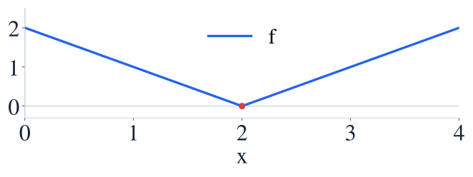
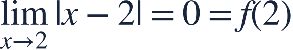

Differentiability and continuity
미분가능성과 연속
A continuous graph can still have a corner.
연속인 그래프에도 뾰족한 점이 있을 수 있습니다.
A continuous graph can still have a corner.
연속인 그래프에도 뾰족한 점이 있을 수 있습니다.
Check continuity first, then compare one-sided slopes.
연속성을 먼저 확인하고 좌우 기울기를 비교하세요.

At the corner, the incoming and outgoing tangent slopes disagree.
뾰족한 점에서는 들어오는 기울기와 나가는 기울기가 다릅니다.

The nearby outputs match the value, so the function is continuous.
주변 출력과 함숫값이 같으므로 연속입니다.
The two sides approach the point with different slopes.
양쪽에서 서로 다른 기울기로 그 점에 접근합니다.
No single finite tangent slope exists at the corner.
뾰족한 점에는 하나의 유한한 접선 기울기가 없습니다.
Continuity alone does not imply differentiability.
연속이라는 사실만으로 미분가능하다고 할 수 없습니다.
Is g continuous? Is it differentiable?
g는 연속인가요? 미분가능한가요?